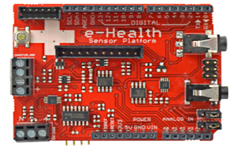
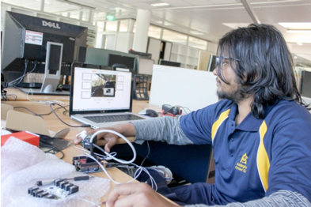
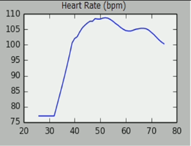
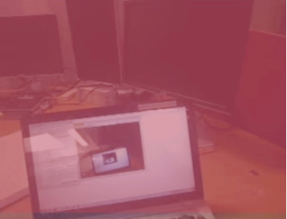
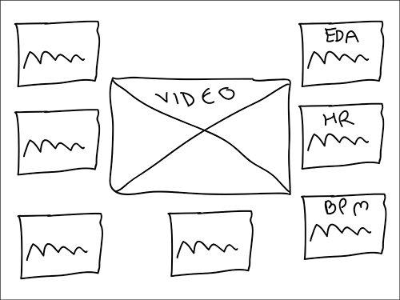
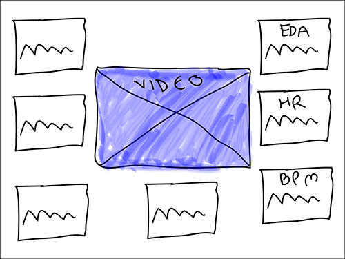
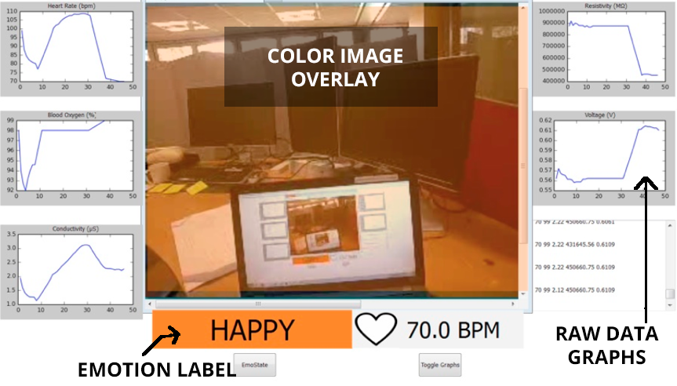
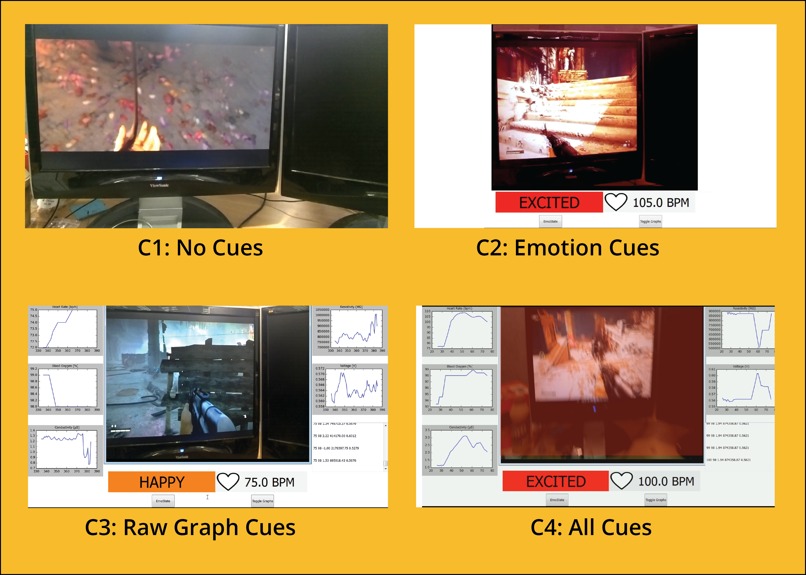
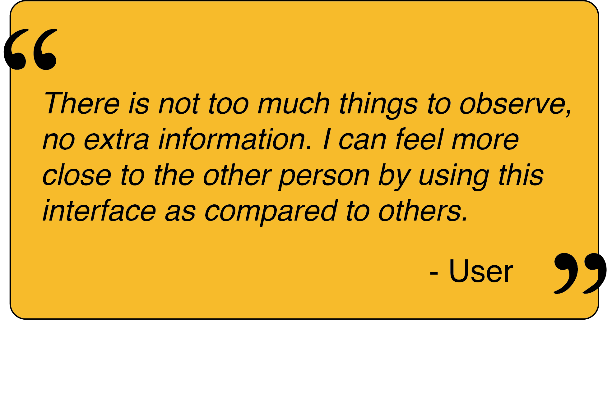
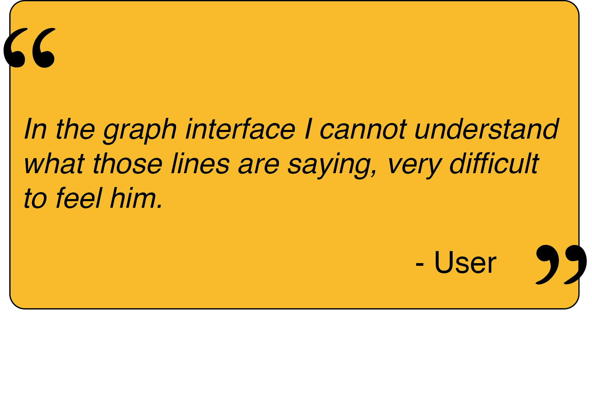

CoSense: Creating Shared Emotional Experiences
Wearable devices such as Google Glass have cameras and microphones in them that enable video and audio to be streamed to a remote person. This allows the remote person to hear and see with the ears and eyes of the Google Glass user. However there has been relatively little research on using wearable technology like this to enable people to share feelings as well.
The goal of our research project CoSense is to explore if sharing physiological sensor data in real time between people can be used to increase shared emotional experiences and create more empathy. This is a part of broader aim to develop wearable systems that will enable a user to share what they are seeing, hearing and feeling with another person.
The problem statement for this research project is: “How can wearable devices be used to share emotional experiences between users and so create a deeper sense of empathy and understanding?"
In the CSense research, passive monitoring of emotions was mainly explored, where a person continuously monitors their emotional levels during their everyday activities and make the data available to a close friend or family member. For example a daughter may check on her elderly mother’s heart rate from time to time to make sure that she is doing okay.
However, in this research we will restrict out scope to active collaboration of emotional state, where a person is engaged in a short period of activity and wants to have a remote person share the experience with them. For example, going for a roller coaster ride for a few minutes. We wanted to use physiological sensors to capture what a user is feeling, and wearable cameras/microphones to record what they are seeing and hearing. Then we want to be able to transmit these feelings, sights and sounds to a remote user to create a shared emotional experience.
For this system, the main components are:
- Wearable computer such as Google Glass that will stream video and audio of the user,
- Sensor system to compute emotions using physiological data,
- Desktop interface for the remote user to view the images and emotional cues being sent from the wearable user.
We made a rough block diagram for the whole idea.

Prototype included a combination of sensors like GSR, Blood Oxymeter and Hear rate sensor to recognise emotions. Google glass was used to capture local user’s POV and send to remote user (laptop for prototype) using spydroid -ipcamera.


One of the research challenge is how to represent the emotional cues in the interface. We explored different ways of showing the user’s emotions using following cues:
- Raw sensor data/graphs,
- Emotion Labels,
- Image Graphic Overlay.


To get an initial idea of how to put these cues together, I sketched and since we had only two factors for the experiment i.e. graphs and colored ovelay, I had to design it using these.


The final interface looked was designed and developed.

A user evaluation was conducted to explore which interface cues best helped a remote user to understand what the local user was feeling.
We evaluated from 4 different interfaces, which were
C1. No Cues: Just video,
C2. Emotion Cue: emotional label, heart rate and video,
C3. Raw Graphs: video with raw data graphs, and
C4. All Cues: Video, raw data graphs, heart rate and emotion tag.
From the ranking questionnaire, we found that C2(Emotion Cues) was significantly better than C1 (No Cues), C3 (Raw Graph Cues) and C4 ( All cues) for questions like How strongly do you feel the emotion? and How well do you think you understood how your partner was feeling?. Whereas C1 (No Cues) was significantly better than C2, C3, C4 for question like How easy was it to understand the interface?
For complete explanation of the results see the Work in Progress paper published at CHI 2015, Seoul, South Korea.
From these results, we observed that the system we developed created an awareness of the Sender’s emotional state in the Receiver. These tests suggested that the Receiver could perceive a deeper understanding of the Sender’s emotional state if they were provided with some emotional representation in a visual form along with audio and video of the Sender’s environment.
Condition 2 (live video color tinted with user’s heart rate and an emotional state label), was felt to be more helpful by Receivers than the interfaces showing the raw sensor data (Condition 3) and even Condition 4 in which both Conditions 2 and 3 were mixed.


Project Supervisor: Prof. Mark Billinghurst Project Members: Sudhanshu Ayyagari, Kunal Gupta and Matthew Tait.
Portfolio